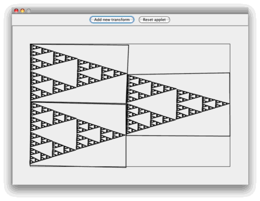
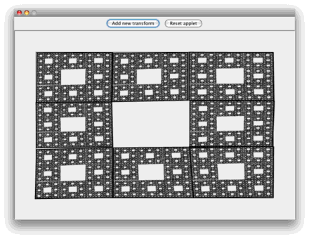
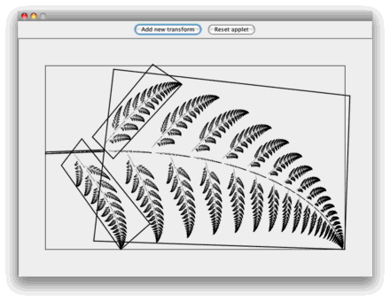

Iterated Function System
Before you begin, see these examples for ideas.

Sierpiński triangle, created with 3 transforms

Sierpiński gasket, created with 8 transforms

Fern, created with 4 transforms

Feathers, created with 2 transforms
Give it a go...
Add transforms to the view and manipulate them by dragging their corners or edges.
Wiki page for comments: http://pauldoo.dyndns.org/Programs/wiki/Iterated%20Function%20System